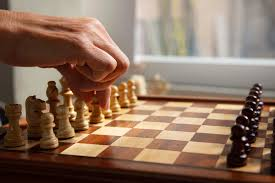
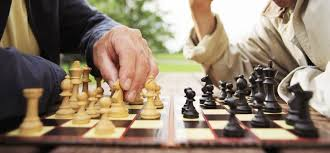
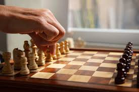
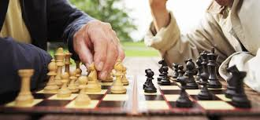

Šah je jedan od najstarijih i najpoštovanijih strateških sportova na svetu,
koji se igra na šahovskoj tabli sa 64 polja i 16 figura po igraču. Ova mentalna
igra, koja se igra između dva takmičara, zahteva duboko razmišljanje, planiranje i
analizu, što je čini izazovnom i uzbudljivom. U šahu, svaki potez može značiti razliku
između pobede i poraza, zbog čega je od velikog značaja svakog trenutka pažljivo razmatrati sledeći korak.
Igra šaha pomaže u razvoju mnogih kognitivnih sposobnosti, uključujući logičko razmišljanje,
koncentraciju i sposobnost rešavanja problema. Šahisti moraju razmatrati sve moguće opcije i
potencijalne posledice svojih poteza, što podstiče analitičko razmišljanje i kreativnost.
Zbog toga, šah nije samo igra za zabavu, već i moćno sredstvo za mentalnu stimulaciju i razvoj.
U savremenom svetu, šah se igra na različite načine – od klasičnih turnira do online platformi,
koje omogućavaju igračima svih nivoa da se takmiče i usavršavaju svoje veštine. Iako je šah tradicija
koja traje vekovima, danas je dostupna svim generacijama, od početnika do profesionalaca. Njegova
univerzalnost i sposobnost da poveže ljude širom sveta čine ga jednim od najlepših i najcenjenijih mentalnih sportova.
 


